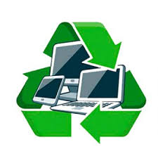

Reciclagem de Eletrônicos

Reciclagem de Eletrônicos
Baterias
A reciclagem de baterias é um processo de recuperação dos materiais constituintes das mesmas, tendo em vista não só o seu reaproveitamento, como remover a sua deposição em aterros sanitários, diminuindo assim o seu volume, e a contaminação de aquíferos subterrâneos.
Em termos técnicos, a reciclagem consiste na recapturação dos materiais, nomeadamente Manganês, Zinco, Aço e Carbono, para serem reintroduzidos no processo industrial, evitando com isso a deposição dos metais pesados, tóxicos e altamente poluentes na natureza, ao mesmo tempo que diminui a necessidade de exploração mineira para a obtenção dos mesmos.
Computadores
Com os avanços tecnológicos, muitos equipamentos (exemplos: computadores, televisões, celulares, etc.) vão sendo desvalorizados e sendo trocados por produtos novos, por esse motivo não são mais utilizados acabam no lixo, causando um grande dano ao planeta, pois se não bastasse os aterros sanitários, agora temos os lixões tecnológicos. Um dos problemas está relacionado aos perigosos componentes químicos presentes nesses equipamentos.
Introdução
O lixo eletrônico é um dos grandes problemas da atualidade. Segundo dados do Greenpeace, por ano, são produzidos até 50 milhões de toneladas desse tipo de dejeto no mundo inteiro. E o volume vem crescendo em 5% ao ano na Europa. A questão principal não é a só que esse lixo ocupe muito espaço, o grande perigo é que a maior parte dos aparelhos eletrônicos usa em sua fabricação metais tóxicos, como mercúrio, chumbo e cádmio. "Quando um computador vai para o aterro sanitário, essas substâncias reagem com as águas da chuva e contaminam os afluentes e o solo", alerta Tereza Cristina Carvalho, diretora do Centro de Computação Eletrônica da Universidade de São Paulo (USP) e coordenadora do Centro de Descarte e Reciclagem de Lixo Eletrônico da instituição.
Etapas da Reciclagem
A reciclagem é um processo composto de três fases: coleta e separação, revalorização e transformação. Nessa última etapa, o material coletado, descontaminado e revalorizado passam a ser matéria-prima para a fabricação de novo produto. Somente após o fechamento desse ciclo é que podemos dizer que houve reciclagem.
Problemas Ambientais
Se não reciclamos os componentes corretamente, as substâncias químicas tóxicas vão parar no ar, na terra e na água.
Solventes e lubrificantes usados em fábricas contaminam a água quando os resíduos vão para os leitos dos rios.
É necessário desmontar os equipamentos para reciclá-los, os componentes tóxicos das agendas eletrônicas tornam-se perigosos ao longo do tempo.
O chumbo e o bário se filtram nas margens dos rios e o carbono dos cartuchos de tinta deteriora a água, que se transforma em não potável, inclusive depois de fervida.
A contaminação do meio ambiente danifica os animais e as comunidades que vivem perto das margens dos rios e que dependem da água.
Como se desfazer do lixo eletrônico
A reutilização e reciclagem do lixo eletrônico deveria ser parte de um plano global para reduzir o impacto deste lixo em crescimento.